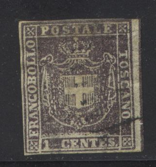
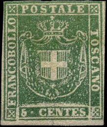
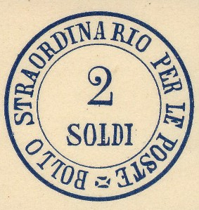

{kind=link}


{kind=link}



Return To Catalogue - Tuscany 1860 issue forgeries - Tuscany (Italy) 1851 issue - Italy
Note: on my website many of the
pictures can not be seen! They are of course present in the
catalogue;
contact me if you want to purchase the catalogue.
With thanks to Lorenzo, (check his excellent website on Italian States! http://www.antichistati.com/800/index800.html) who kindly set some of his images at my disposal.
For Tuscany (Italy) 1851 issue click here
1 Centes lilac 5 Centes green 10 Centes brown 20 Cent blue 40 Cent red 80 Cent red 3 Lire IT yellow
Watermark seen from the backside of a certified genuine 80 c
stamp

Backside of a 20 c stamp with parts of a word in the watermark
For the specialist: these stamps have watermark 'wavy crossing lines' (see picture at previous issue). In the middle of the sheet a slanting inscription 'I 1 E R R POSTE TOSCANE' exists in this watermark. Some stamps show a part of these words. The most common stamp is the 10 c. The 3 L is extremely rare. The 40 c is known to exist bisected to serve as two 20 c stamps.
Value of the stamps |
|||
vc = very common c = common * = not so common ** = uncommon |
*** = very uncommon R = rare RR = very rare RRR = extremely rare |
||
| Value | Unused | Used | Remarks |
| 1 c | R | *** | |
| 5 c | RR | *** | |
| 10 c | *** | * | |
| 20 c | RR | *** | |
| 40 c | RRR | *** | |
| 80 c | RRR | RR | |
| 3 L | RRR | RRR | |
Small circular cancels seem to have been used most commonly on these stamps.
In the early 20th century already 7 forgeries existed (according to Album Weeds), the first thing that can be checked is the presence of a watermark (but some forgeries have watermark too). The bottom line is always open at two places at the bottom (since the value was added in). The pearls at the extreme right and left of the crown are elongated. Examples of forgeries:
2 Soldi black
These stamps were seperated by hand-drawn red lines (about 4 centimeters apart). They are never cancelled and not sold to the public. It was printed in black on very thin, yellowish, almost transparent paper sheets. One sheet was composed of 80 pieces in 10 rows of 8 stamps each. This stamp was often cut very close to the circular print before being applied to the newspaper. Example of a stamp used on a newspaper:
Value of the stamps |
|||
vc = very common c = common * = not so common ** = uncommon |
*** = very uncommon R = rare RR = very rare RRR = extremely rare |
||
| Value | Unused | Used | Remarks |
| 2 s | ? | *** | |
| Reprint | * | - | |

A Fournier forgery as it can be found in 'The Fournier Album of
Philatelic Forgeries'.
I think the next stamps are forgeries:
(Forgeries? Note the strange cancels, reduced sizes)
The following labels are essays or proofs, however, issued somewhere in the 1860's(?).
(Inscription "PERIODICI FRANCHI")
(Inscription "DA ESIGERE 3")
{kind=link}